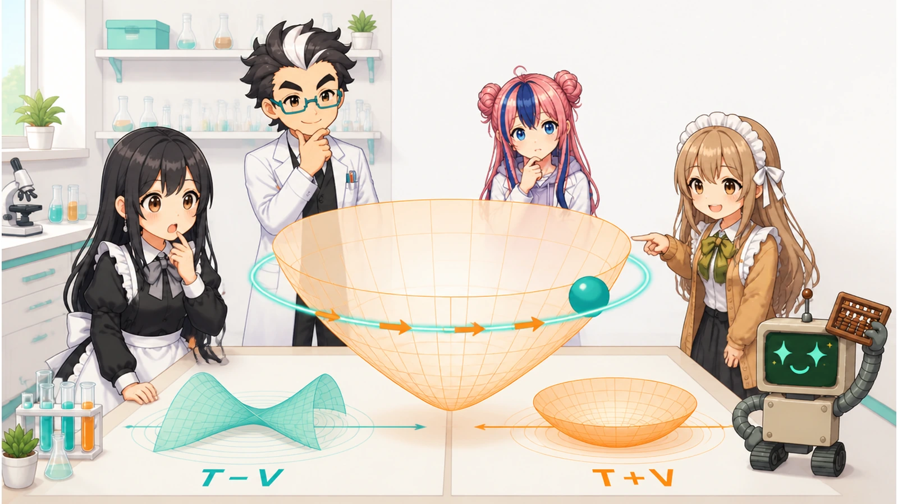
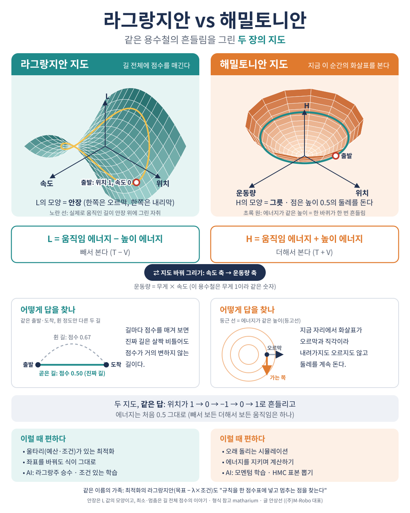

박사둘째 장은 더하기의 지도다. 축 하나를 바꿔 그린다.

모아제 팀이에요. 지금 이 순간 어디로 가는지가 중요하죠.

시아제 지도랑 정말 같은 움직임이 나와요?

②편 · 방 5~8-1속도 축을 운동량 축으로 바꾸고 에너지를 더하면 그릇이 생깁니다. 공은 그 그릇의 둘레를 돕니다.
코드·수식을 몰라도 됩니다. 식은 조수 상자 안에만 있습니다.
운동량 = 질량 × 속도, 그리고 H = T + V

말로 먼저 — 속도 대신 '멈추기 어려운 정도(운동량)'를 축으로 씁니다. 그러면 빼기였던 점수가 에너지 더하기로 바뀝니다.
학교 수학으로 보면 — 일차함수(운동량 = 질량 × 속도), 이차함수
| 식 조각 | 뜻 |
|---|---|
| p = m·v | 운동량 |
| T = p²/(2m) | 운동량으로 쓴 움직임 에너지 |
| H = T + V | 해밀토니안 — 에너지를 더한 값 |
| H = p·v − L | 르장드르 변환: ①편의 L에서 H를 만드는 식 |

트럭이 같은 속도로 와도 더 무서운 이유가 운동량입니다.
모멘텀 경사 하강의 "모멘텀"이 바로 이 운동량입니다. 지난 걸음의 기세를 기억합니다. ④편에서 봅니다.


왼쪽 지도(위치·속도)의 점은 질량가 바뀌어도 그대로입니다. 오른쪽 지도(위치·운동량)의 점은 위로 올라갑니다.
두 지도는 같은 움직임을 그립니다. 축이 다를 뿐입니다.
위치·운동량 두 축 위에 H를 높이로 세우면 그릇이 된다
말로 먼저 — 위치와 운동량을 바닥에 깔고 에너지를 높이로 세우면 그릇이 됩니다. 에너지가 같은 곳을 이으면 동그라미가 됩니다.
학교 수학으로 보면 — 원의 방정식 x² + y² = r², 이차함수의 그래프
| 식 조각 | 뜻 |
|---|---|
| q | 위치 |
| p | 운동량 |
| H = ½p² + ½q² | 용수철의 에너지(질량 1, 용수철 세기 1) |
| H = 일정 | 같은 높이의 둥근 선(등고선) 위를 돈다 |
그네를 더 높이 밀어 주면 더 큰 원을 그립니다. 에너지가 더 크기 때문입니다.
그릇 시리즈의 오차 그릇과 생김새가 같습니다. 다만 여기서는 바닥으로 내려가지 않고 둘레를 돕니다. 이유는 7번 방에서 봅니다.


출발점을 바깥으로 끌수록 H가 커지고 원도 커집니다.
공은 출발한 높이의 둥근 선을 따라 돕니다. 에너지가 줄지 않으니 바닥으로 내려가지 않습니다.
화살표가 오르막과 직각이라 내려가지 않는다
말로 먼저 — 지금 자리의 오르막 방향을 90도 돌린 쪽으로 움직입니다. 그래서 높이(에너지)가 바뀌지 않고 둘레를 돕니다.
학교 수학으로 보면 — 미분(기울기), 벡터의 내적(직각이면 0)
| 식 조각 | 뜻 |
|---|---|
| q̇ = ∂H/∂p | 위치가 변하는 빠르기 = H를 운동량으로 미분 |
| ṗ = −∂H/∂q | 운동량이 변하는 빠르기 = H를 위치로 미분하고 마이너스 |
| ∇H = (∂H/∂q, ∂H/∂p) | 오르막 화살표(그래디언트) |
| (q̇, ṗ) · ∇H = 0 | 가는 쪽과 오르막이 직각 |
경사 하강은 공을 내리막으로 굴리고, 해밀턴 식은 공을 둘레로 돌립니다.
경사 하강(−∇H)은 바닥으로, 해밀턴 화살표는 둘레로 갑니다. ∇ 특별편의 "도는 학습(GAN)"도 이렇게 도는 화살표가 문제였습니다.
어느 시각에서나 주황 화살표(가는 쪽)는 회색 화살표(오르막)와 직각입니다.
그래서 공은 높이(에너지)를 바꾸지 않고 시계 방향으로 한 바퀴를 돕니다. 한 바퀴는 약 6.28초(2π)입니다.
AI의 답 AI가 그린 위상 지도에서, 마찰 없는 용수철의 공이 그릇 바닥(원점)으로 빨려 들어갔습니다.
확인할 질문 마찰이 없는데 에너지(높이)가 줄 수 있나요? 화살표가 오르막과 직각인지 보세요.
줄 수 없습니다. 마찰이 없으면 둘레를 돌아야 합니다. 바닥으로 빨려 들면 식에 마찰이 잘못 끼었거나 계산 걸음법이 틀린 것입니다(12·13번 방).
바닥 근처를 확대하면 어떤 지형도 그릇(이차함수)이 된다
말로 먼저 — 바닥 근처를 크게 확대하면 어떤 모양도 이차함수(그릇)처럼 보입니다. 값, 기울기, 굽음을 차례로 더해 가는 방법이 테일러 급수입니다.
학교 수학으로 보면 — 다항함수, 미분(기울기), 이계도함수(굽음)
| 식 조각 | 뜻 |
|---|---|
| f(a) | 0번째 항: 그 점의 값 |
| f′(a)(x − a) | 1번째 항: 기울기 |
| f″(a)(x − a)²/2! | 2번째 항: 굽음 — 그릇 모양 |
| 1 − cos q ≈ q²/2 | 진자의 바닥 근처 = 용수철 |
흔들림이 작을 때 시계추가 용수철처럼 일정한 박자로 흔들리는 이유입니다.
경사 하강은 1번째 항(기울기)만, 뉴턴 방법은 2번째 항(굽음, 헤시안)까지 씁니다. 학습 지형의 바닥 근처가 그릇으로 보이는 것도 이 2번째 항 덕분입니다.


q가 0.5 이하이면 차이가 2% 남짓입니다. 2 근처로 커지면 차이가 커집니다.
바닥 근처에서는 모든 지형이 그릇입니다. 그래서 7번 방의 "둘레를 도는 화살표"가 어디서나 통합니다.
원자료 ②의 e^x·sin x 버튼에서는 차수를 올릴수록 근사가 넓은 범위에서 맞습니다. 원자료 꼬리표의 오타(e^x 2차, sin x 3·5차)는 이 패널에서 바로잡아 적었습니다.
같은 용수철이 왼쪽 지도에서는 안장, 오른쪽 지도에서는 그릇
말로 먼저 — 같은 순간을 두 지도에 함께 찍습니다. 오른쪽 에너지는 그대로이고, 왼쪽 점수는 계속 바뀝니다.
학교 수학으로 보면 — 원의 방정식, 쌍곡선(안장의 등고선), 삼각함수 cos·sin
| 식 조각 | 뜻 |
|---|---|
| L = ½v² − ½q² | 왼쪽 지도의 높이 — 안장 |
| H = ½p² + ½q² | 오른쪽 지도의 높이 — 그릇 |
| q = cos t, p = v = −sin t | 두 지도가 함께 찾은 답 |
같은 여행을 시간표로 적을 수도, 지도에 선으로 그을 수도 있습니다.
같은 문제를 다른 변수로 다시 쓰면 풀기 쉬워지는 일이 많습니다. 원래 문제와 쌍대 문제(③편 SVM)가 그 예입니다.

두 점은 언제나 같은 위치를 가리킵니다. 같은 움직임을 다른 축으로 그렸을 뿐입니다.
오른쪽의 H는 0.5에서 변하지 않습니다. 왼쪽의 L은 계속 바뀌어서 길 전체를 더해야 의미가 생깁니다.
이 페이지에 나온 방과 개념을 모았습니다. 검색하고, "설명 보러 가기"로 본문에 돌아갑니다.
지식 색인을 출처와 함께 파일로 내려받습니다. Zotero(BibTeX·RIS), Protégé(Turtle), Neo4j·Gephi(CSV), 여러 페이지 합치기(kg.json)에 씁니다.